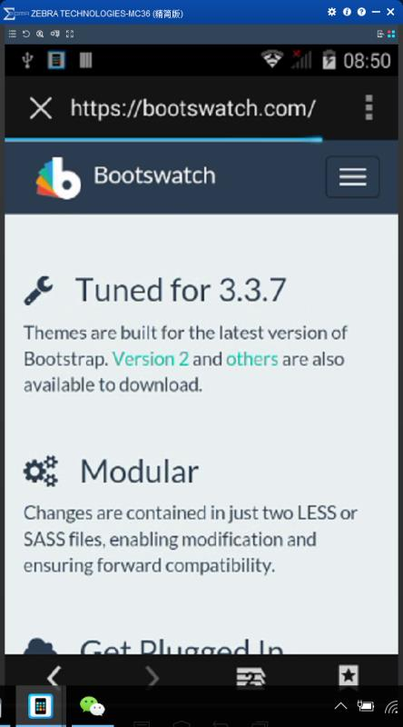

..
富鈦全製程查看報工信息
Toggle navigation
如何将PDA的画面在电脑显示
借助Total Control工具
确认启用usb调式
确认完成后可自动监测到设备
开启后样子
用PDA查看报工信息
Portal pda上的画面
pda WO 按录入日期統計（测试）
可选择日期看当天的工单
单张工单报工信息
bootswath样式
手机版画面
下里样式
按钮样式
Table样式
T100查看报工信息
T100程序
T100作业程序中的信息
工单内的各张报工单
Table样式
页面查看报工信息
T100对应的portal上的工单单号
portal页面上对应T100程序中的报工单
portal上应该也显示不良数量
-->
PDA
1.可以使pda的画面显示在pc需要借助pc端的Total Control应用工具实现
2.pda弹出提示启动USB调式吗？点击确定
3.确认完成pc端可以自动监测到链接上的机器（注意：若是Android的手机需要开启开发者模式）
4.开启后原本大小
开启后调式大小
6.打开portal画面和预期的差不多Table会自动调整到手持端的可视范围
7.测试点开速查T100数据=>WO 按录入日期統計（测试）
手动调式后应该有的效果
8.打开2017-08-11的所有报工信息
没有达到打开portal时的那种效果
调整过后
9.查看某张工单里的报了哪些工
点击报工单号可以查单单笔信息
调整尺寸过后
bootswatch
10.应做成bootswath那种的样式
s

下拉选项
按钮样式
Table样式
T100
11.T100查看报工信息
T100作业程序中的信息
报工单号
工单内的各张报工单
页面
T100对应的portal上的工单单号
portal页面上对应T100程序中的报工单
portal上应该也显示不良数量
PDA
T100
页面